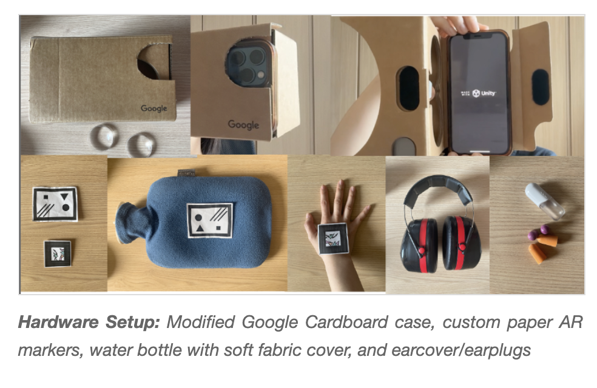
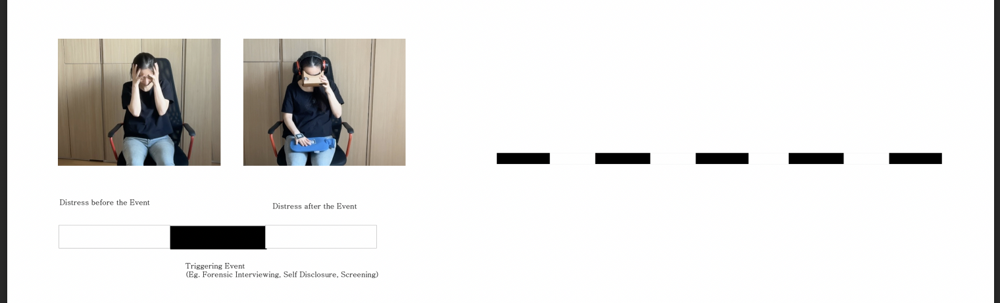
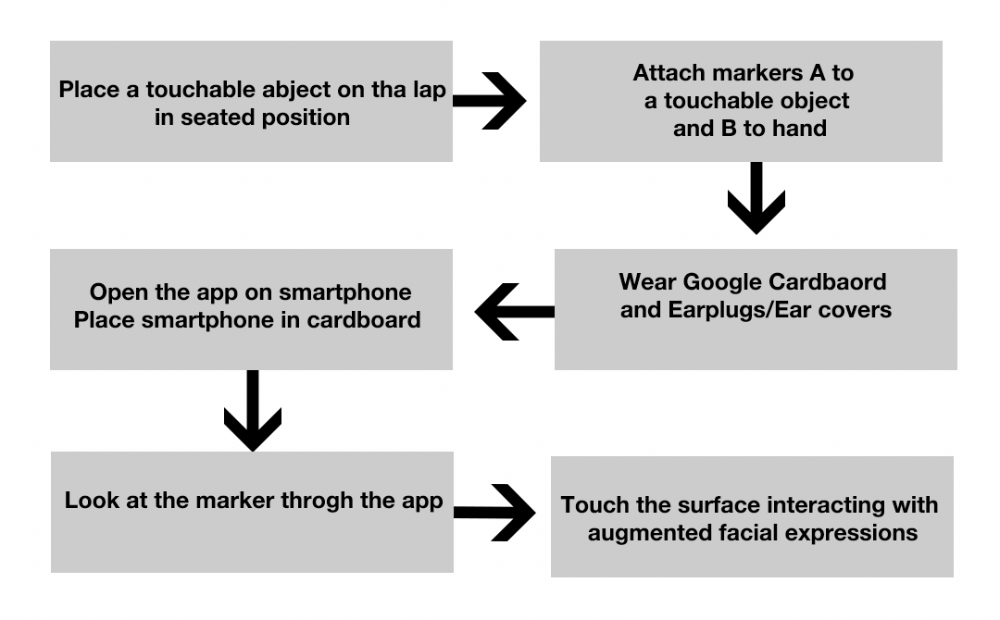

Wish You Were Here XR: Invisible Emergencies

Problem: Invisible Emergencies
Solution: A Wearable, Portable Assistive Tool

Examples of Usage and User Journey


Trauma-Informed and Neurodiversity-Informed Design
Somatic Design and Design Justice
Future Work and Further Reading